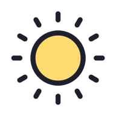

无法从本地缓存启动
请联网打开一次，待加载完成后再断网使用。
重试
统计中心
记录你的坚持与成长
偏好设置
让打卡更符合你的习惯
界面外观
深色太空
浅净明亮
跟随系统
每日打卡提醒
开启后将按时发送通知提醒您打卡
安装到桌面
支持离线运行。若浏览器无安装提示，请在菜单中选择「添加到主屏幕」
添加
数据备份与恢复
可选密码保护：导出与导入的加解密均在浏览器本地完成，数据不会上传至任何服务器。
导出本地备份
导入本地备份

小日常打卡 v1.0.0
纯本地运行 • 无服务器 • 加载一次后断网可用
日常
统计
偏好
新建习惯
名称
励志寄语 (选填)
主题色彩
习惯图标
打卡时段
晨间
午后
晚间
全天
频率设定
一
二
三
四
五
六
日
保存习惯
删除习惯